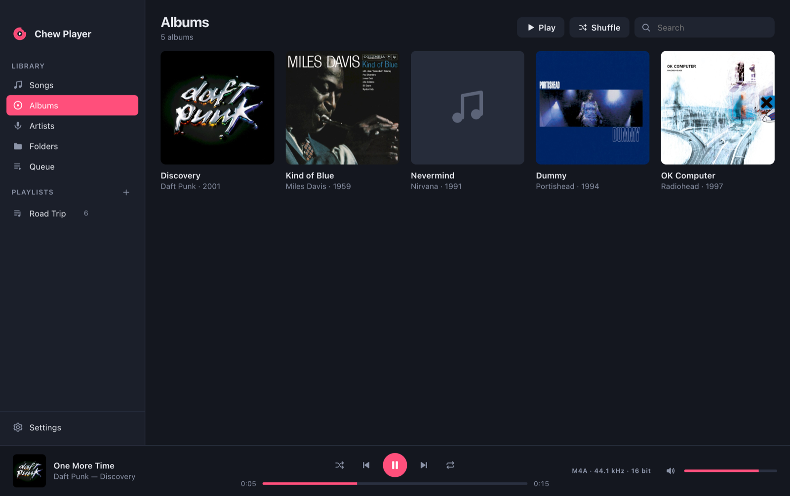

Your folders.
Your music. Just play.
Chew Player is a simple, folder-based music player for macOS and Windows. Point it at your music, and it plays almost any format and fills in missing details from open music databases.
Free & open source · MIT licensed · No account, no cloud, no tracking

Everything a music player needs.
Nothing it doesn't.
Remember when a music player just played your music? Chew Player brings that back with a clean, flat look.
Folders first
Add your music folders and Chew Player scans them. You can browse the real folder tree or use Songs, Albums and Artists. Drop a folder on the window to add it.
Fills the gaps
Missing artist, album, year or cover? Chew Player reads your folder names, then looks the song up in MusicBrainz and the Cover Art Archive.
Plays (almost) anything
Common formats play natively. Lossless and exotic files like ALAC, APE, WavPack, WMA and DSD are decoded on the fly by the bundled FFmpeg.
Playlists, simply
Drag songs onto a playlist and reorder them by dragging. Import and export standard M3U files, so your playlists also work in other players.
Hands off your files
Chew Player never moves, renames or rewrites your files. Your tag edits and playlists live in its own small library.
Fast & friendly
Smooth with tens of thousands of songs. Includes queue, shuffle, repeat, media keys, keyboard shortcuts and light & dark themes.
If it's audio, it plays.
Chew Player doesn't care where your music came from, whether that's a ripped CD, a hi-res download or an old WMA collection.
- Add a folderPick the folder where your music lives, or just drag it onto the window.
- Let it chewChew Player reads the tags, finds cover images and guesses what's missing from your folder layout.
- Look it upAnything still unknown is matched against MusicBrainz, and album art comes from the Cover Art Archive.
- Press playDouble-click a song, build a playlist or hit shuffle.
Get Chew Player
Free, open source and small. Pick your platform:
xattr -cr "/Applications/Chew Player.app" in Terminal. On Windows, click
More info → Run anyway in the SmartScreen dialog.
All releases are listed on GitHub Releases.